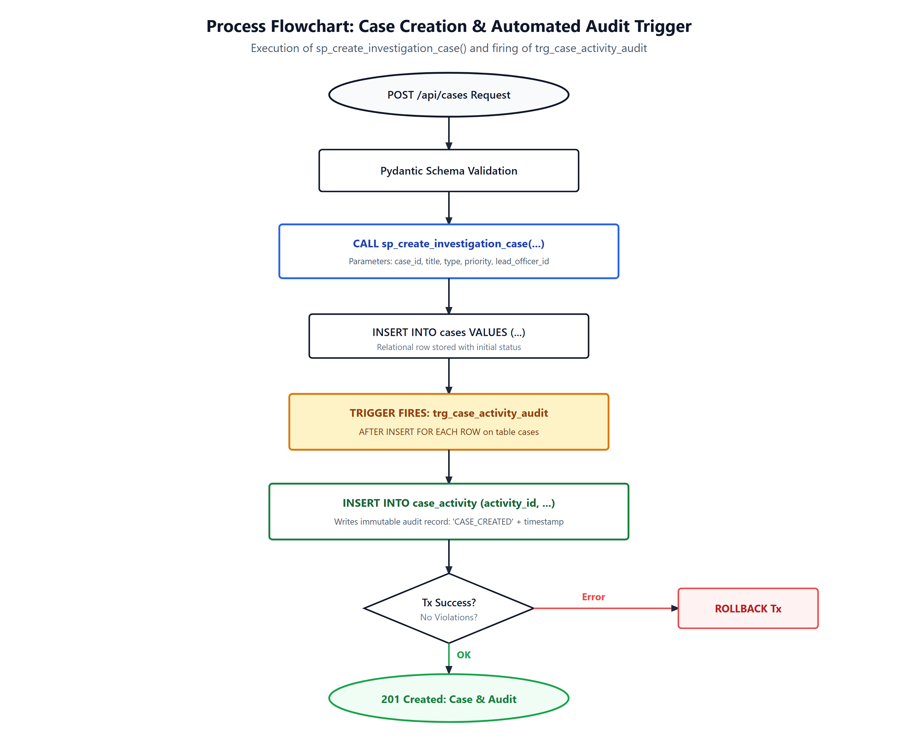

We implemented procedural database logic directly inside PostgreSQL to ensure transactional consistency and automated auditing, independent of the application layer. The procedures, functions, and triggers defined in database/sql/advanced-concepts.sql enforce business constraints and maintain immutable logs.

sp_create_investigation_case() and automatic audit row creation via trg_case_activity_audit.The stored procedure validates officer credentials and atomically creates both the case record and its initial audit log entry within a single transaction.
CREATE OR REPLACE PROCEDURE sp_create_investigation_case(
IN p_case_id VARCHAR(50),
IN p_title VARCHAR(200),
IN p_description TEXT,
IN p_case_type VARCHAR(100),
IN p_priority VARCHAR(50),
IN p_lead_officer_id VARCHAR(50)
)
LANGUAGE plpgsql
AS $$
BEGIN
-- Verify existence of assigned lead officer
IF p_lead_officer_id IS NOT NULL AND NOT EXISTS (
SELECT 1 FROM officers WHERE officer_id = p_lead_officer_id
) THEN
RAISE EXCEPTION 'Officer ID % does not exist in law enforcement registry.', p_lead_officer_id;
END IF;
-- Provision primary case record
INSERT INTO cases (
case_id, title, description, case_type, status, priority, lead_officer_id, incident_date, created_at, updated_at
) VALUES (
p_case_id, p_title, p_description, p_case_type, 'Open', p_priority, p_lead_officer_id, CURRENT_TIMESTAMP, CURRENT_TIMESTAMP, CURRENT_TIMESTAMP
);
-- Automatically log case provisioning to immutable case_activity audit log
INSERT INTO case_activity (
case_id, activity_type, title, description, officer_id, activity_timestamp
) VALUES (
p_case_id,
'CASE_INITIALIZED',
'Case Record Created',
CONCAT('Case initialized with priority "', p_priority, '" and type "', p_case_type, '".'),
p_lead_officer_id,
CURRENT_TIMESTAMP
);
END;
$$;
CALL sp_create_investigation_case('CASE-2026-999', 'Operation Neon Cipher', 'Cryptocurrency drainer ring', 'Financial Cybercrime', 'High', 'OFF-001');
SELECT case_id, title, status, priority, lead_officer_id FROM cases WHERE case_id = 'CASE-2026-999';
case_id | title | status | priority | lead_officer_id
---------------+------------------------+--------+----------+-----------------
CASE-2026-999 | Operation Neon Cipher | Open | High | OFF-001
SELECT activity_type, title, description FROM case_activity WHERE case_id = 'CASE-2026-999';
activity_type | title | description
------------------+---------------------+------------------------------------------------------------------
CASE_INITIALIZED | Case Record Created | Case initialized with priority "High" and type "Financial Cybercrime".
To ensure an auditable chain of custody on case status changes, we implemented an AFTER UPDATE trigger that logs every modification to status or priority directly to case_activity.
CREATE OR REPLACE FUNCTION fn_audit_case_state_change()
RETURNS TRIGGER
LANGUAGE plpgsql
AS $$
BEGIN
IF (OLD.status IS DISTINCT FROM NEW.status) THEN
INSERT INTO case_activity (case_id, activity_type, title, description, officer_id, activity_timestamp)
VALUES (NEW.case_id, 'STATUS_CHANGE', 'Case Status Updated',
CONCAT('Investigation status modified from "', OLD.status, '" to "', NEW.status, '".'),
NEW.lead_officer_id, CURRENT_TIMESTAMP);
END IF;
IF (OLD.priority IS DISTINCT FROM NEW.priority) THEN
INSERT INTO case_activity (case_id, activity_type, title, description, officer_id, activity_timestamp)
VALUES (NEW.case_id, 'PRIORITY_CHANGE', 'Case Priority Updated',
CONCAT('Urgency priority updated from "', OLD.priority, '" to "', NEW.priority, '".'),
NEW.lead_officer_id, CURRENT_TIMESTAMP);
END IF;
NEW.updated_at = CURRENT_TIMESTAMP;
RETURN NEW;
END;
$$;
CREATE TRIGGER trg_case_activity_audit
AFTER UPDATE OF status, priority ON cases
FOR EACH ROW
EXECUTE FUNCTION fn_audit_case_state_change();
We ran an UPDATE statement to confirm that the trigger automatically creates audit records without application-level intervention.
SELECT case_id, status, priority FROM cases WHERE case_id = 'CASE-2026-001';
case_id | status | priority
---------------+--------+----------
CASE-2026-001 | Open | High
UPDATE cases SET status = 'Under Investigation', priority = 'Critical' WHERE case_id = 'CASE-2026-001';
SELECT activity_id, case_id, activity_type, title, description, activity_timestamp
FROM case_activity
WHERE case_id = 'CASE-2026-001'
ORDER BY activity_timestamp DESC LIMIT 2;
activity_id | case_id | activity_type | title | description
-------------+---------------+-----------------+-----------------------+---------------------------------------------------------------------------
12 | CASE-2026-001 | PRIORITY_CHANGE | Case Priority Updated | Urgency priority updated from "High" to "Critical".
11 | CASE-2026-001 | STATUS_CHANGE | Case Status Updated | Investigation status modified from "Open" to "Under Investigation".
(2 rows automatically generated by PostgreSQL kernel trigger)